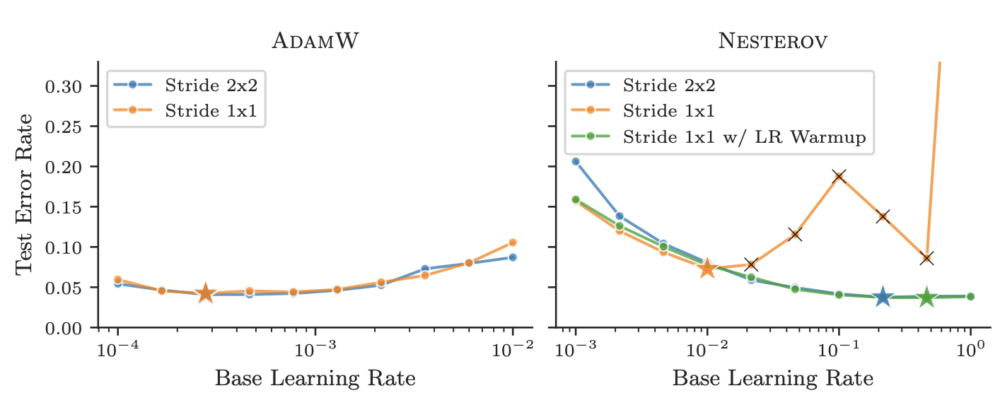
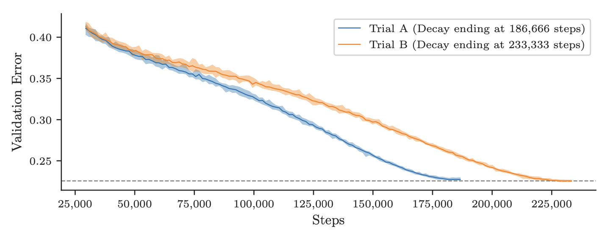

Challenges in Optimizer Benchmarking
Word Count: 2,525
What makes an idea worthwhile?
Everyone and their mom is talking about AI, publication counts are rising to meet that interest, and there are exponential trends observable in the mention counts for topics like AI, DL, and ML on sites like Arvix, Google, and Twitter. Psychologically this rise in exponential conversation leads to inevitable need for people to look for some sort of clear signal for grounding themselves in which can promise to quantify how and where they should choose to pay attention or cast aside an idea as hype.
Tools which provide a reasonable and quantifiable line to compare wide swaths of work against as a fair comparator of performance are in many ways priceless, difficult to formulate, and contentious by their very nature. That's the environment which Benchmarking Neural Network Training Algorithms from Dahl et al. (2023) enters into with the new and exciting ''Algoperf: Training Algorithms'' benchmark, promising a new and exciting API framework for quantifying and comparing a growing field of optimizer algorithms.
With the recent release of the inaugural results for the ''Algoperf'' benchmark I'm hoping to spend some time today breaking down how the ''Algoperf'' benchmark really works to quantifying as best as it can what performance really mean for optimizers. This can hopefully be both a educational opportunity to put the finger on the pulse of where some this new and exciting benchmark is taking the evaluation of something as multidimensional as a optimizer and may provide a look into the contours of where the work on optimizers is moving of late.
What is a Optimizer
Implementing a AI training pipeline front to end entails a huge swath of moving parts from a dataset to model architecture, loss function, and of course our focus today optimizers. Optimizers always struck me as a underdiscussed part of AI research as literally billions of dollars are burnt quarter after quarter on training increasingly giant and complicated models to eek out bits of performance and the choice of optimizer algorithm for your AI training can have tremendous effects on wasted resources unless you can have confidence that your algorithm of choice is the best one to put the weight of tremendous training runs onto.
The Trillion dollar challenge, you're dropped with $10B of GPUs into the mountains without a map and racing against the clock to navigate down to the valley below...
If you aren't deeply emeshed into AI training it would be worthwhile to provide a brief description of what a optimizer is even doing in the first place: Optimizer algorithms are responsible for taking how wrong a AI is at the task it's trying to get good at and translates that measurement of error into how far each and every parameter dial in your AI model should be turned to try and bring that error down. Pretty important work.
Technically, when training a model we're given:
- A Dataset \( D = \{(x_i,y_i)\}^{N}_{i=1} \) where \(x_i\) are input features and \(y_i\) are target labels.
- A Model \(f(x, \theta)\) with parameters \(\theta\).
- A Loss function \(L(f(x, \theta), y)\) that measures the difference between predicted output \( f(x, \theta) \) and the true output \(y\)
Avoiding Credibility Collapse from flawed Criterion
The fundamental problem ''Algoperf'' rises to address is that no matter the paper you choose to pick out from a crowd you'll likely find some line in there talking about how "[their] Algorithm A outperforms Algorithm B by C%" and while at a glance those types of sentences seem to attribute some reason to use a author's algorithm over it's competitors. Digging in deeper, papers are encouraged to (for the sake of garnering attention) inflate the impact of their finding and minimize the number of words spent explaining where their work doesn't actually outperform pre-existing methods and nowhere is this more obvious than in discourse around choice of Opimitizer. In actuality it's exceedingly difficult to figure out which Optimizer is going to be better as a default pick for your AI training experiments or how to set up your optimizer for the specific project which your working on. Without a benchmark consensus becomes fractured and the forest is lost for the trees of which optimizers seem to be working best and on which tasks. ''Algoperf'' uses this as the fundamental challenge which it aims to quantify and clarify in it's benchmarking. The ''Algoperf'' teams points out four fundamentally problematic dimensions along which previous attempts to quantify comparisons of Optimization algorithms in the field have strayed from being maximally informative.- Difficult in Measuring Training speed
One of the fundamental strengths which a optimization algorithm can claim over it's peers is that it will guide your model to the minimum achievable loss quicker than the alternative choices. But the ''Algoperf'' team highlights how in many of the papers describing why to use one optimization algorithm choice over another arguments resort to the language of generalities (Ex: "frequently delivers faster convergence") as opposed to more specific measurements of how reliably faster convergence actually is. In part this is because optimizers tend to outperform or underperform eachother differently based on how you decide to measure their error over time or at which point you decide to stop training and compare the two.
''Algoperf'' chooses to measure training speed via picking for every included workload a "near-state-of-art" out-of-distribution error rate as a useful heuristic standard to compare every optimization algorithm against.
- Dependence of Results on Workload
This section draws attention to the hard reality benchmarks love to tip-toe around that the usefulness of a optimization algorithm ought to be judged on the basis of how good it is at getting tasks done which we care about and that to really quantify what choice is best you need to consider quite deeply which workload your really trying to get done in the first place. Which jobs are most representative of what optimization algorithms are going to be more used for.
- Sensitivity of Results to Model Architecture
Another issue with leaving optimizer comparison up to the author is that optimizers seem to perform far differently depending on small changes in the base model which they're optimizing. To relate this to the metaphor of descending the valley, the shape of the valley (aka the model space we're in) influences tremendously which set of rules are really going to get us down the fastest. In fact the goal should be to have a optimization algorithm which works the best on as many valleys as possible (or where we know which ones we should be applying it at least) and conversation currently tends to bring out one optimization algorithm as generally applicable when the authors are in actuality just observing that it works well on a specific landscape.
"After changing from a standard \(2 \times 2\) stride to a \(1 \times 1\) stride, the performance of Nesterov drops significantly while AdamW is largely unaffected. Adding a \(\eta \) warmup [or \(\nabla \) clipping] allows Nesterov to recapture its original performance."
``Algoperf'' chooses to address this by folding the model architecture into the workload itself and essentially holding the architecture constant for a task in order to preserve more apples-to-apples comparative ability across optimizers on the same task.
- Consideration of Hyperparameter Tuning
The more nuanced difficulty with evaluating optimizers which the authors highlight in their attempt to define a real method for quantifying the whole field of optimizers is that optimizers come in many different forms and in many cases are built using hyperparameters which are meant to be tuned to the specific task at hand. This means that some optimizers have a plug-and-play nature where you can add them into your model without adjusting the hyperparameter of your optimizer while others have an additional barrier to effective application but potential room for quantifiable benefit when used best. Some optimizers have different sets of hyperparameters meant to be tuned and on top of that the method of tuning the hyperparameters becomes an axis along which to differentiate optimizers which is unclear as to whether it should or shouldn't matter.
Even changes in the time over which the tuning of hyperparameters takes place can lead to thinking one model achieves better results.
This reveals a hidden metric for how susceptible any given optimizer algorithm is to changes in workload causing the chosen hyperparameters to suddenly dramatically underperform where they would have been if hyperparameters where reselected. \[ \Phi(H) = \min_{h \in H} (\varphi(h, H)) = \min_{h \in H} \left( \max_{w} \left| \frac{\text{val}(w, h) - \text{val}_H(w)}{\text{val}_H(w)} \right| \right) \] When a optimizer has a space of hyperparameter values to search through we can define some set of possible hyperparameters \(H \) out of which there is some \( \text{val}(w, h) \) which is the validation error for any specific hyperparameter value \(h \in H \), we can then define \( \text{val}_H(w) \) to be the optimal validation error which we'd get from the best possible hyperparameter choice within \(H \). A naive approach to choosing \(h \) would be to picking some \(h \in H\) which minimizes how far that choice puts error from the optimal on all of the available workloads. In this way \(\Phi(H) \) essentially puts a value to how sensitive a given optimizer algorithm is to the specific workload it's being applied to.
Algoperf Testing Regime
Algoperf operates by compiling a aggregate benchmark score of the time-to-result for a relevant real-world task where the timer is stopped when training reaches a pre-specified goal rate of error on the model's validation / test sets for a fixed hardware configuration. Optimizers submitted to the benchmark are given choices of a few generic tuning methods which any given algorithm is allowed to use and the creators of the benchmark have written a custom API which works to both limit the meddling of the optimizer in the model and to lumps any changes to the workload made by the optimizer into the time which the optimizer is limited to, allowing workload alterations but at a cost representative of the cost of time-to-performance which matter for developers. At the end of the day the benchmark is intended to give the flexibility of picking optimizers with all sorts of different pre-tuning required but aspires to incorporate the cost of that additional complexity to get working optimally into the metric for evaluation.
In order to evaluate any particular optimizing algorithm a runtime budget is picked alongside a maximum runtime before stopping, this is usually four thirds of the baseline runtime set by testing that runtime budget on standard optimizers, and a validation loss cutoff is set based on how far those generic optimizers on that workload were found by Algoperf to on average end out on validation and testing loss.
As for getting one number to rule them all to evaluate a optimizer by, Algoperf has it's own way of quantifying that as well: Algoperf asks the questions of what fraction of workloads a optimizer is within some ratio of having the best training time on that workload. Given the raw training time \(t_{s,w} \) for a set of \(k \) submissions \(S = \{s_1, s_2, ... s_k\} \) measured on a set of \(n \) workloads \(W = \{w_1, w_2, ... w_n \} \) the performance of submission \(\bar s \) on workload \(\bar w \) the performance ratio of that submission on that workload becomes: \[ r_{\bar s, \bar w} = \frac{t_{\bar s, \bar, w}}{\min_{s \in S}t_{s, \bar w}} \] This formula works out that if a submission takes twice as long on a certain workload than the best submission then it receives a performance ratio of 2, for example and \(r_{\bar s, \bar w} \geq 1 \) for all submissions and workloads. Extending this concept out a performance profile can then be defined describing the probability on a random workload \(\bar w \) drawn uniformly from \(W \), \(\bar s \) will have a performance ratio \(r_{\bar s, \bar w} \) of at most \(\tau \) where \(\tau \in [1, \inf] \): \[ \rho_{\bar s}(\tau) = \bigg(\frac{1}{n}\bigg)({\bar w : r_{\bar s, \bar w} \leq 1}) \] \(\rho_{\bar s}(\tau) \) expresses the fraction of workloads where a submission is less than \(\tau \) away from the optimal submission, and therefore is bounded to be within the range \([0, 1]\). Not bad right?
Results & Musings on Benchmarks
What makes a idea worthwhile? Algoperf with performance ratios and something akin to: "if it figures out a way to get the tasks we care about done quicker". I really enjoyed digging into (and doing a lot of synthesizing to boil down) this nearly 100 page paper today and am generally awed by the knowledge of optimizer design on display by it's authors as well as the extreme attentiveness to other efforts in the field to put benchmarks to optimizers and where they've fallen down before Algoperf.
A article on benchmarking couldn't be resolved whole heartedly without an acknowledgment of the elephant in the room, that being that in reality most Optimizers end out becoming the norm not based on their pure efficiency to train the model the quickest but instead some combination of social inertia, ease of use, general applicability to the tasks that matter, and most importantly use in the Training runs which really attract the big bucks. Algoperf attempts to define a predefined set of tasks to measure models against and a predefined set of hardware to run those models on but in actuality the tasks which matter is a moving target roughly tracking the mass of CAPEX and space where models need to be built, it would be fascinating to see a Algoperf which adapts it's relevant workload over time and keeps track of which submissions manage to, through the changes in that workload makeup, keep boiling their way up to the top of comparative performance. I also can't help but notice that the specifying of hardware set up may begin to fly in the face of the practicalities of project tradeoffs as the hardware field diversifies into niche customized AI accelerators for specific models and hardware changes around the models.
Times are interesting and overall Algoperf provides a invaluable tool for sorting through the noise and learning to understand where the hype clears out into a real struggle to find the techniques which represent real progress. My thanks to the authors for their thoughtful grappling with this problem and I can only tie this article up with the graph which their 1000s of hours of effort led up to, the top performing models on Algoperf...